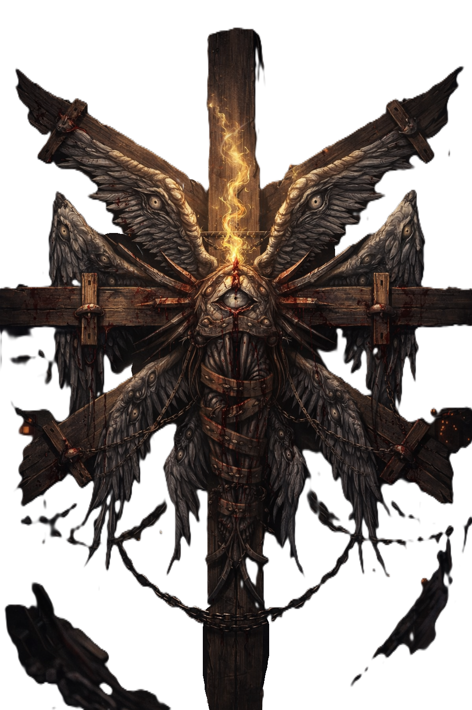

DOC. PA-001 · CLASSIFICAÇÃO: RESTRITO · CÓPIA ÚNICA
PROJETO NOVO MUNDO
Registro interno de pesquisa, observação e contenção de entidade anômala.
DOCUMENTORESTRITODIRETORIA · NÍVEL 4
01 / IDENTIFICAÇÃO DA ENTIDADE

- Nome da entidade
- SAMAEL
- Identificador
- PA-001
- Classificação
- Não determinada.
- Morfologia
- Humanoide não convencional.
- Características
- Múltiplas estruturas alares, diversos olhos distribuídos pelas asas e um olho central.
- Posição observada
- Fixada em uma estrutura cruciforme.
- Responsável pelo projeto
- Fábio Magnum.
OBSERVAÇÃO "A designação Samael foi mantida por determinação da diretoria. A origem do nome não consta no relatório de admissão."
02 / CONDIÇÃO OPERACIONAL
ESTADO DA CONTENÇÃO
ESTÁVEL
Integridade da estrutura96%
Atividade anômalaBAIXA
- MonitoramentoONLINE
- Última atualização12/01/2026
03 / LOCALIZAÇÃO
COMPLEXO INDUSTRIAL BOM DE PAU
- Instalação
- Unidade de Pesquisa C-07.
- Ambiente
- Câmara de contenção isolada.
- Setor
- C / Subnível 04.
- Acesso
- Diretoria / autorização nível 4.